Rear Retainer Removal
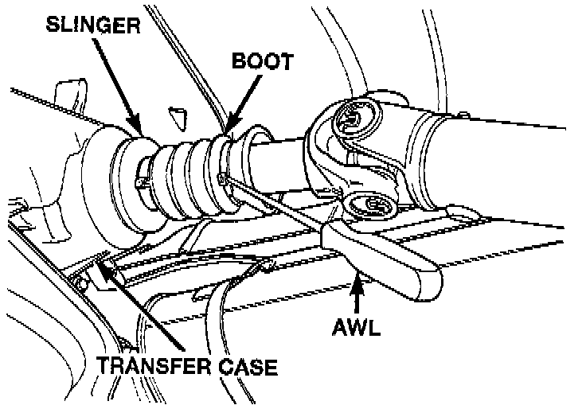
1. Remove output shaft boot. Spread band clamp that secures boot on slinger with a suitable awl. Then slide boot off shaft.
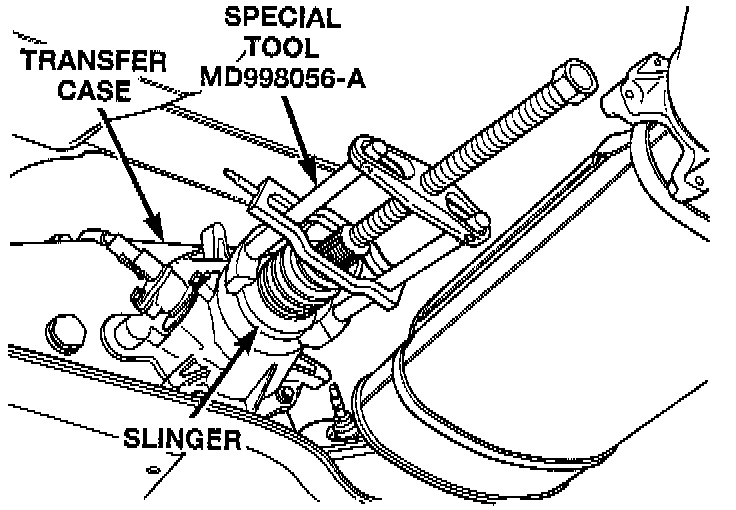
2. Using puller MD-998056-A, or equivalent remove rear slinger.
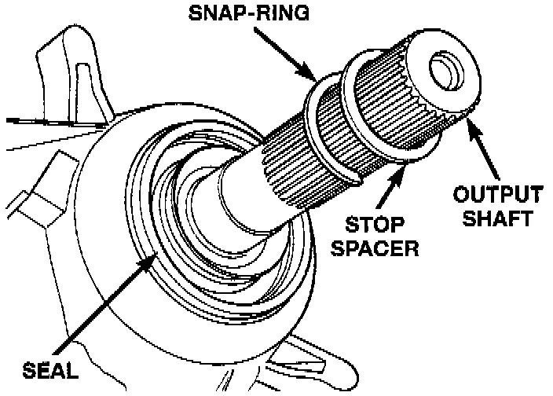
3. Remove slinger stop spacer and snap-ring from output shaft.
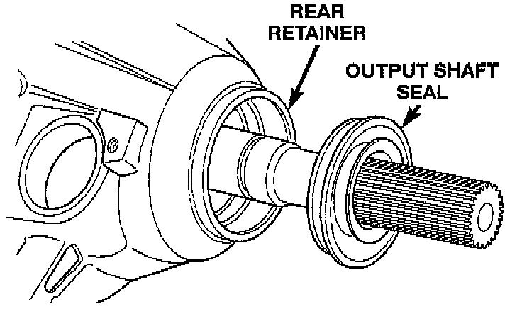
4. Remove rear seal from retainer. Use pry tool, or collapse seal with punch to remove it.
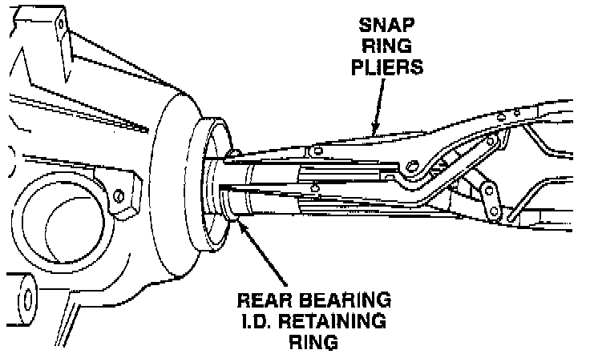
5. Remove rear output bearing I.D. retaining ring.
6. Remove speedometer adapter.
7. Remove rear retainer bolts.
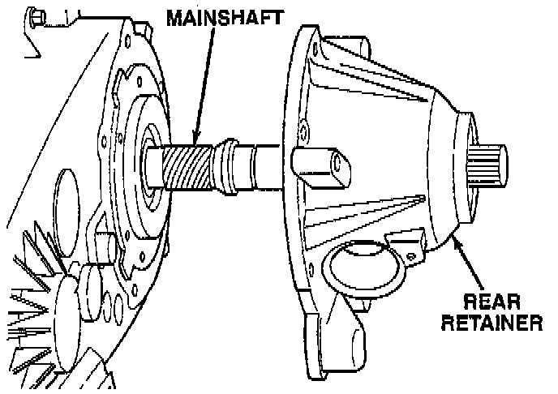
8. Remove rear retainer. Tap retainer with mallet and pry upward to break sealer bead. Then slide retainer off case and output shaft.
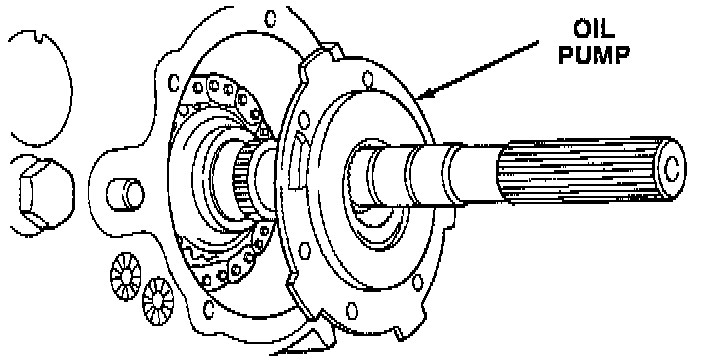
9. Remove rear bearing O.D. retaining ring with snap ring pliers. Then tilt pump and slide it off output shaft.
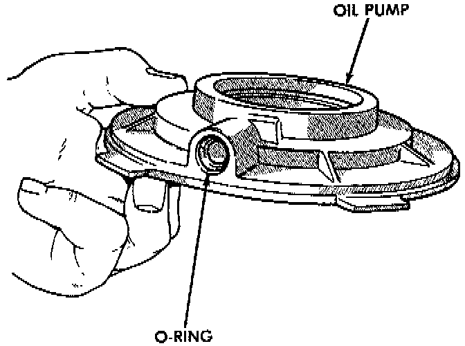
10. Remove pickup tube O-ring from pump but do not disassemble pump; it is not a repairable part.
11. Remove seal from oil pump with pry tool.
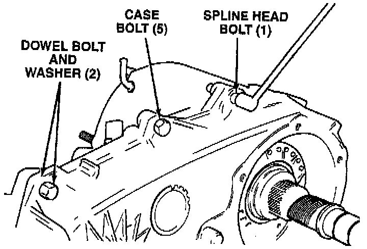
12. Remove bolts attaching rear case to front case. Note position of the two black finish bolts at each end of the case. These bolts go through the case dowels and require a washer under the bolt head.
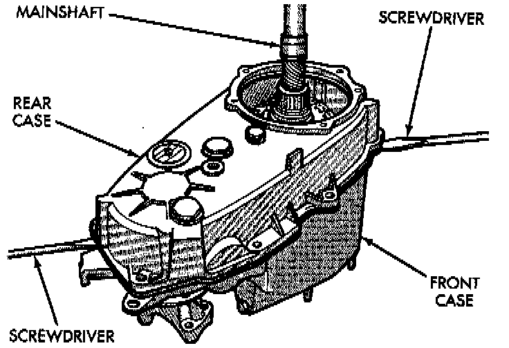
13. Remove rear case from front case. Insert screwdrivers into slots cast into each end of case. Then pry upward to break sealer bead and remove rear case.
CAUTION: Do not pry on the sealing surface of either case half as the surfaces will become damaged.
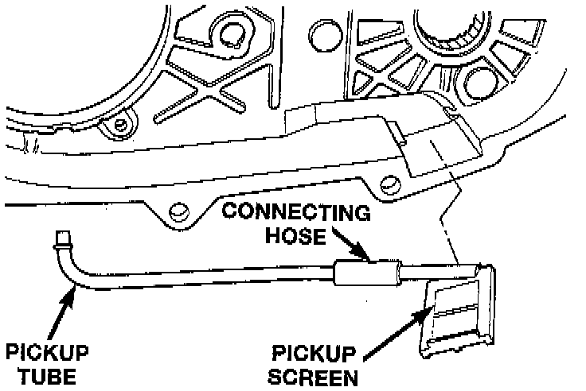
14. Remove oil pickup tube and screen from rear case.